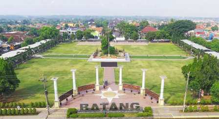
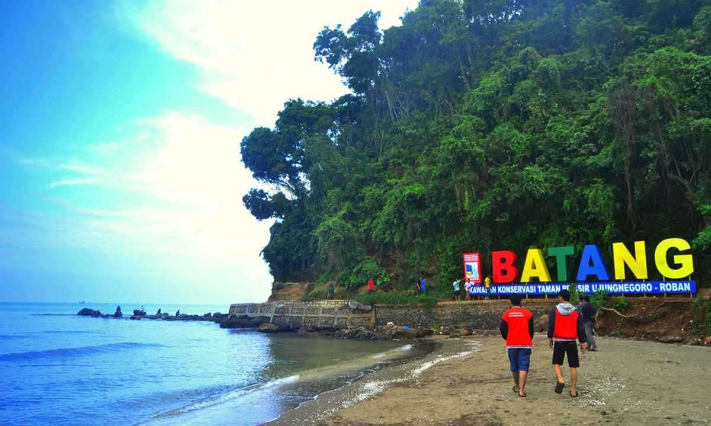
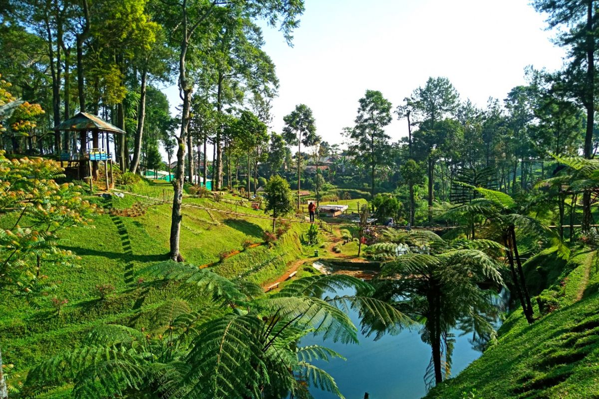

Local Point of Interest
Kali Kuto Bridge

Kali Kuto Bridge is a 100-meter-long bridge on the Semarang–Batang Toll Road and is one of the most recognizable structures in Batang, thanks to its red arch design. Construction began in mid-2017, and the bridge was officially inaugurated by President Joko Widodo in December 2018, alongside the opening of the Semarang–Batang Toll Road. It should be noted that stopping on the bridge is strictly prohibited except in emergencies, as it poses safety risks. Nevertheless, the bridge has become a well-known local landmark for travelers along the toll road and local.
Town Center
Town Center, also known as Alun-Alun, is an iconic landmark that represents the zero point of Batang Regency, a place where history, culture, and social life converge in a single open area. The Town Center was historically built as an administrative center during the colonial era, as evidenced by its surroundings, including the Masjid Agung Darul Muttaqin, the Batang Regent Office, and a traditional shopping area. Within the Town Center, there are many facilities such as a play area, jogging path, open grounds, and places to sit and relax. The area regularly hosts various cultural and entertainment events, especially on weekends and holidays.
Ujung Negoro Beach
Ujung Negoro Beach is a coastal area characterized by cliffs and coral reefs that extend into the Java Sea. It is considered one of the most iconic beaches along the Batang Regency coastline, located just below the rocky hill where the tomb of Syeh Maulana Maghribi stands. The beach lies about 14 km from downtown Batang and can be reached in around 30 minutes by motor vehicle. At Ujung Negoro Beach, tourists can enjoy a variety of activities such as taking selfies, watching local fishermen at work, fishing, casting nets, jogging along the shoreline, or simply playing in the waves.
Pagilaran Tea Plantation
Pagilaran Tea Plantation is one of the more popular tourist destinations. It covers a total area of 1,130 hectares and is situated at an altitude of 600–1,600 meters above sea level. The plantation was originally owned by the Dutch in 1899, but it was destroyed by a fire and later brought by the British in 1922. It was briefly occupied by the Japanese and later returned to British control in 1947 until 1949. In 1964, the plantation was given to Universitas Gadjah Mada (UGM) as a study and research area for their students. Today, the plantation is managed by the Faculty of Agriculture of UGM. The plantation offers a variety of facilities, including a tea walking path, tea factory, flying fox, photo spots, children’s play area, hanging bridge, and lodging.